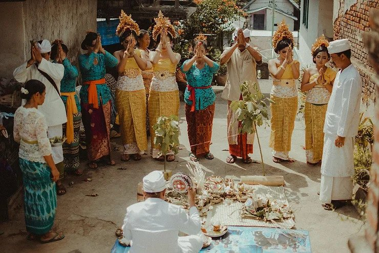
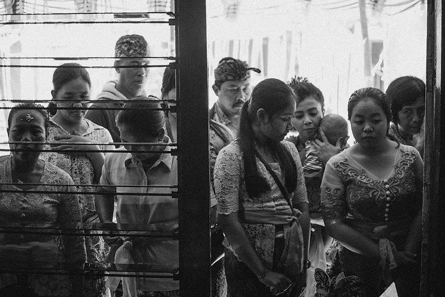
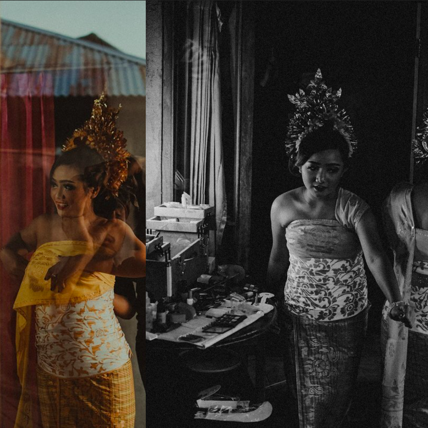
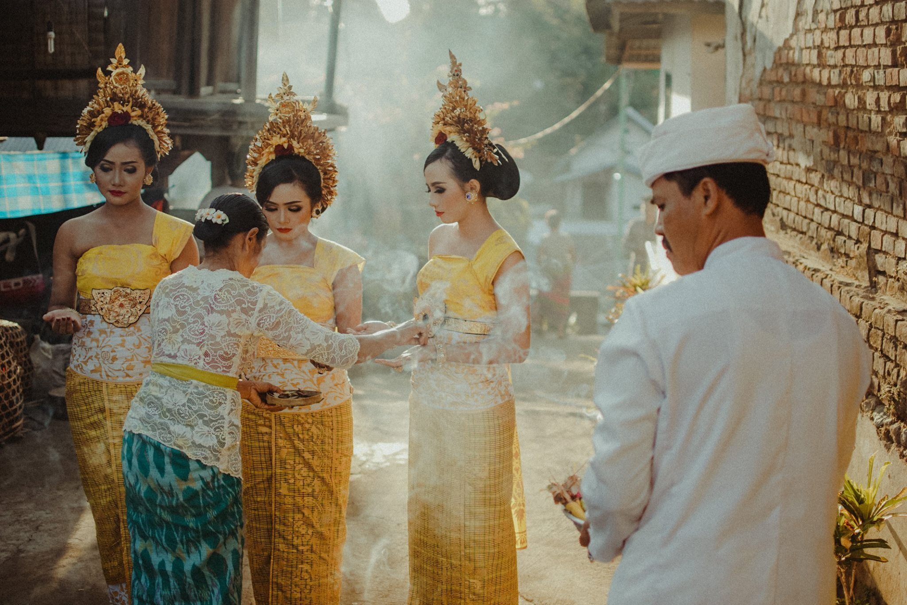
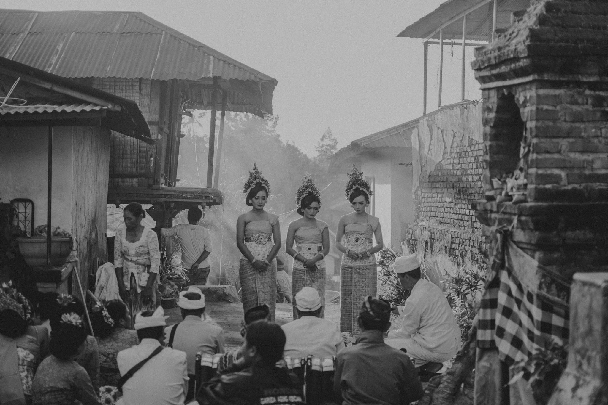
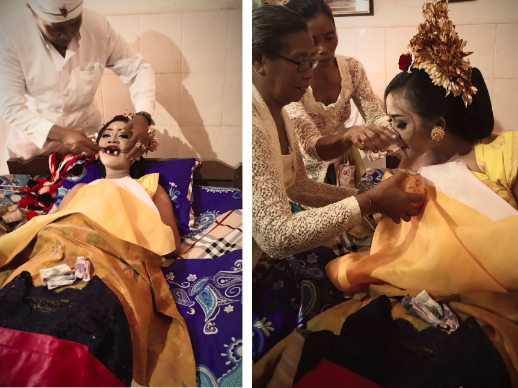
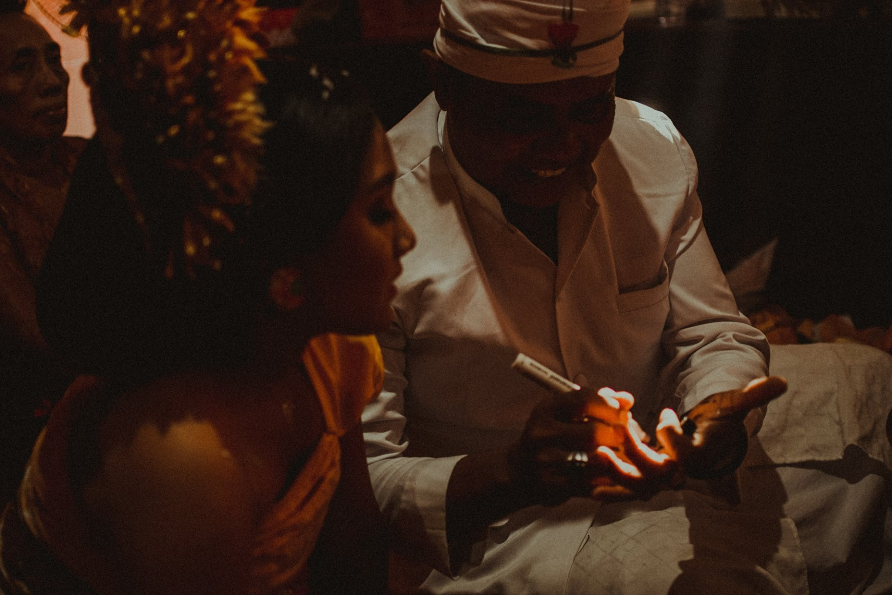
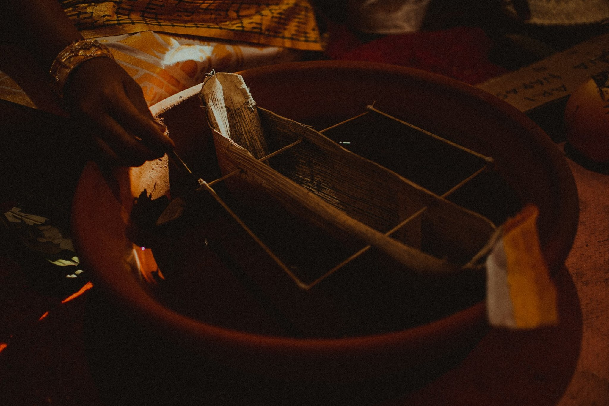
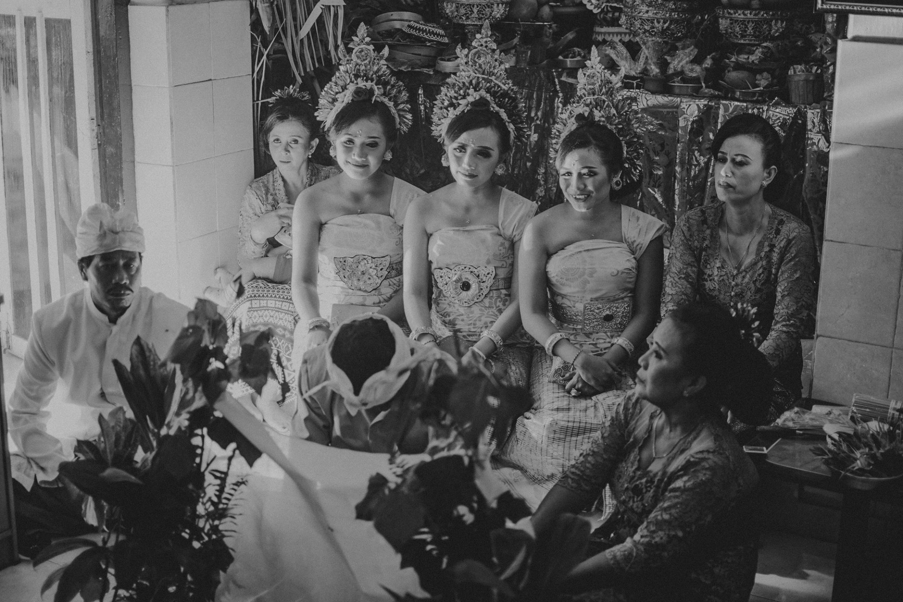
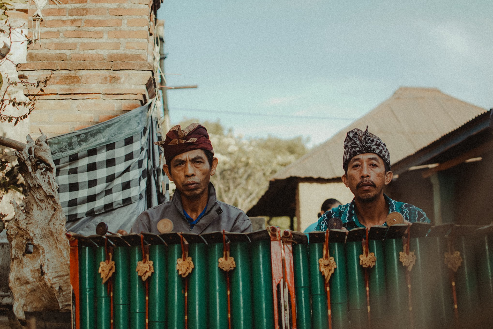

First week in Canada, mild winter.
Menilik tradisi potong gigi di Bali

Potong gigi? kok ngilu ya?
Potong gigi merupakan salah satu tradisi adat Bali, yang mana dalam bahasa Bali, tradisi ini lebih dikenal dengan nama Mepandes, Mesangih, atau Metatah. Hal ini merupakan salah satu upacara keagamaan umat Hindu di Bali, yang dilaksanakan ketika seseorang beranjak dewasa (atau dalam istilah kawan muslim kita menyebutnya saat seseorang sudah akil baligh), misalnya bagi perempuan setelah mendapatkan menstruasi pertama, atau bagi laki-laki dapat dilakukan setelah mengalami perubahan suara.
Esensi upacara potong gigi
Dalam tulisan ini, saya ingin bercerita sedikit tentang pengalaman saya saat melaksanakan upacara potong gigi atau Metatah pada bulan Agustus tahun 2018 yang lalu. Upacara ini saya laksanakan bersama dengan orang tua dan saudari-saudari saya. Mari kita ulas sedikit tentang makna dari upacara ini, dipandang dari sisi agama Hindu.
Dalam agama Hindu, upacara potong gigi merupakan salah satu upacara manusa yadnya, yakni korban suci atau upacara yang dilaksanakan kepada sesama manusia. Upacara ini adalah bagian dari Sarisa Samskara, yang esensi utamanya adalah untuk menemukan hakekat manusia sejati dan menyucikan diri pribadi seseorang, membersihkannya dari berbagai elemen buruk dalam wujud bhuta, kala, maupun raksasa, sehingga terlepas dari belenggu kegelapan yang disebut Sad Ripu. Umat Hindu percaya bahwa terdapat enam musuh yang ada di dalam diri manusia, yang merupakan akibat dari adanya sifat Asubha Karma atau sifat buruk dari manusia itu sendiri. Keenam musuh itulah yang disebut Sad Ripu (sad = enam, ripu = musuh), yang dapat dirinci sebagai berikut.
- Kama, atau sifat penuh nafsu indriya,
- Lobha, yakni sifat serakah dan tamak,
- Krodha, sifat kejam dan pemarah,
- Mada, sifat mabuk dan lupa diri (kegila-gilaan),
- Moha, sifat bingung dan angkuh,
- Matsarya, sifat dengki dan irihati.
Dalam upacara Metatah, sad ripu tersebut dilambangkan dengan enam buah gigi (4 gigi seri, dan 2 gigi taring pada rahang atas) oleh karena itu dalam upacara Metatah, gigi yang diasah adalah 6 gigi tersebut. Jika dilihat secara harfiah, kata Metatah berasal dari kata "atatah" yang berarti "pahat", sementara kata Mepandes sendiri berasal dari kata "nandes" yang berarti "menekan", dan kata Mesangih berasal dari kata "sangih" yang berarti "menajamkan".
Tradisi potong gigi telah dilaksanakan secara turun temurun, dan merupakan kewajiban bagi seluruh umat Hindu. Upacara ini juga merupakan bentuk pembayaran hutang oleh orang tua kepada para leluhur, sebagaimana konsep umat Hindu yang mengenal adanya Tri Rna, yaitu tiga hutang yang harus dibayar. Dalam hal ini, orang tua membayar hutang kepada leluhur dengan cara menjaga keturunannya, dengan tujuan untuk menghilangkan keenam sifat buruk tersebut.
Upacara ini membutuhkan biaya yang tidak sedikit karena banyaknya perlengkapan upacara yang dibutuhkan. Biasanya, upacara ini juga disertai dengan mengundang sanak saudara dan keluarga besar untuk hadir turut menyaksikan jalannya upacara. Karena merupakan wujud kewajiban orang tua kepada anaknya, maka upacara ini hendaknya dilaksanakan sebelum seorang anak menikah (terutama untuk anak perempuan). Namun, sesuai dengan kondisi ekonomi masing-masing keluarga, upacara ini dapat juga dilaksanakan di rumah keluarga suami (misalnya saja, ibu dan ayah saya turut metatah berbarengan dengan anak-anaknya). Dewasa ini, ada banyak orang yang melaksanakan Metatah secara masal, untuk dapat meringankan pembiayaan. Hal ini sah-sah saja, karena yang terpenting adalah esensi dari upacara itu sendiri.
Runtutan upacara potong gigi
Menjelang pagi, seluruh anggota keluarga telah bersiap-siap. Sekitar jam 3 dini hari, biasanya para laki-laki di seluruh desa akan datang ke rumah penyelenggara upacara, sesuai dengan undangan yang telah disampaikan sebelumnya. Biasanya, hal itu dimulai dengan prosesi nglawar, yang merupakan proses membuat sayuran dan makanan yang berbahan daging dan sayur khas Bali. Pada saat ini juga, orang yang akan diupacarai, mulai berhias diri, biasanya dengan menggunakan busana adat Bali. Segalanya dimulai pada dini hari, sebab upacara akan dimulai sekitar pukul 6 pagi.
Kegiatan diawali dengan upacara persembahyangan. Rangkaian prosesi Metatah cukup panjang. Ada berbagai tahapan upacara yang harus dilaksanakan, dan masing-masing memiliki makna yang religius. Rincian dari prosesi upacara ini bisa berbeda antara satu wilayah dengan wilayah yang lain, sebab sebagaimana halnya kebiasaan di Bali, segalanya disesuaikan dengan Desa, Kala, Patra. Desa berarti tempat kita berada, kala adalah waktu saat kita berada, dan patra adalah keadaan ataupun situasi dan kondisi di mana kita berada. Desa Kala Patra ini berarti kelenturan interpretasi masyarakat pada suatu wilayah dalam kurun waktu tertentu yang disesuaikan dengan situasi/keadaan tertentu, sehingga menjadikan tradisi sebagai warisan yang lentur, fleksibel, dan menjawab kebutuhan jamannya.
Izinkan saya mengutip dari www.kulkulbali.co, untuk menjelaskan tahapan prosesi ini. Upacara diawali dengan Magumi Padangan, yakni memohon tirtha panglukatan pada Bhatara Brahma dan dilaksnakan di dapur. Kata “Dangan” pada Padangan berarti Dapur. Upacara ini juga disebut Masakapan di Pawon. Selanjutnya yaitu Pengekeban, upacara ini dilakukan di dalam ruangan (meten atau gedong) yang mengandung makna bahwa anak yang akan mepandes melaksanakan Brata, yakni janji untuk mengendalikan diri dari hal-hal negatif yang disimboliskan dengan Sad Ripu. Kemudian Mabyakala yang dilaksanakan di halaman rumah untuk membersihkan pengaruh-pengaruh negatif dalam diri.
Setelah itu, seluruh keluarga melakukan persembahyangan di Merajan, dimana dalam upacara ini anak yang akan mepandes memohon wara nugraha dari Bathara Hyang Guru dan leluhur, dalam upacara ini anak yang akan mepandes juga menyembah iu dan ayah sebagai perwujudan bakti kepada orang tua, dan juga Ngrajah gigi atau menulis gigi dengan aksara suci dan pemahatan taring yang bermakna bahwa Ida Sang Hyang Widhi (Tuhan YME) telah menganugrahkan kelancaran pada upacara ini seperti simbolis Sang Hyang Siwa memotong taring putra-Nya yaitu Bhatara Kala.
Salah satu tahapan yang paling penting adalah ketika prosesi "meratakan" gigi. Membayangkannya saja sudah membuat ngilu. Tahapan ini dilaksanakan setelah selesai upacara di pamarajan. Prosesi ini dilakukan oleh Sangging dengan mengikir 6 gigi yang sudah disebutkan tadi. Kemudian menikmati Sirih-lekesan, simbolis kehidupan baru telah dimulai dengan bermacam kenikmatan hidup dan tantangan, dan Sang Hyang Siva beserta Panca Dewata senantiasa akan melindunginya. Lalu kembali ke tempat Ngekeb yang dilanjutkan dengan upacara Mejaya-jaya dan Mapinton.
Jika ditinjau dari segi kesehatan, proses "memahat" atau "mengikir" gigi ini mungkin saja berbahaya, sebab dapat merusak email gigi. Oleh sebab itu, dewasa ini, masyarakat maupun pelaksana upacara telah semakin paham, sehingga ketika upacara berlangsung, gigi tidak benar-benar dikikir, melainkan hanya dalam bentuk simbolis. Meskipun demikian, hal ini sama sekali tidak mengurangi esensi dan nilai religius-spiritualitas yang terkandung di dalam upacara tersebut.
Upacara meperas
Sebagai rangkaian dari upacara Metatah atau Mepandes, biasanya juga dilaksanakan upacara "Meperas". Upacara ini dilaksanakan untuk anak bungsu dalam keluarga, agar menurut kepercayaan, di akhirat mereka dapat bertemu lagi. Pada upacara ini biasanya diberikan kepada anak itu suatu hadiah berupa pakaian atau uang menurut kedudukan sosial orang tua mereka.
Dalam prosesi ini, dikisahkan bahwa ketika di akhirat, si anak bungsu terpisah dari kedua orang tua dan kakak-kakaknya. Dia terombang-ambing di lautan dan berusaha menemukan jalan untuk dapat berkumpul bersama keluarganya. Melalui upacara ini, sang orang tua berusaha "menyelamatkan" si anak bungsu sehingga bisa bertemu dan berkumpul kembali.
Suasana haru sangat terasa selama prosesi upacara "Meperas". Kadangkali karena terbawa suasana, si anak, kedua orang tua, maupun anggota keluarga lainnya hingga meneteskan air mata karena haru, karena cinta yang begitu dalam dari orang tua kepada anak-anaknya, dan cinta yang dalam dari anak-anak kepada orang tuanya.
Cukup unik bukan tradisi ini? Semoga saja masyarakat Bali bisa senantiasa menjaga warisan budaya, adat, dan tradisi dari para leluhur, agar tak memudar dimakan zaman. Semoga upacara ini bisa dimaknai dengan sebaik-baiknya, sesuai dengan esensi dari upacara itu sendiri, sehingga tujuan dari upacara ini bisa terwujud sebagaimana yang menjadi harapan kita.
Sekian.
